Datacom HCIP笔记
交换机的高级特性
Mux-vlan技术
当一个企业有如下需求：
1、一个部门一个vlan，访客单独一个vlan
2、所有部门和访客都可以访问共享资源
3、部门之前相互隔离，访客与除共享资源外的所有区域隔离
此时就需要使用mux-vlan技术，Mux-vlan技术是vlan技术的高级用法
思科中管mux-vlan叫做
private vlan【私有vlan】
Mux-vlan角色
- 主vlan:
- 一个Mux-vlan网络只有一个主vlan
- 开启Mux-vlan功能的vlan自动成为主vlan
- 主vlan可以被Mux-vlan中的所有vlan访问
- 隔离型子vlan:
- 一个Mux-vlan网络只有一个隔离子vlan
- 隔离型子vlan和除主vlan外的其他vlan不通
- 隔离子vlan内也不互通
- 互通型子vlan：
- 一个Mux-vlan网络可以有多个互通子vlan
- 互通子vlan和除主vlan外的其他vlan不通
- 互通子vlan内部可以互通
Mux-vlan配置
1、创建vlan
vlan batch 10 100 200
2、配置接口，划分vlan（略）
3、配置Mux-vlan
vlan 10 # 进入vlan视图
mux-vlan # 开启mux-vlan 【谁开启，谁就是主vlan】
subordinate separate 100 # 设置隔离型vlan
subordinate group 200 # 设置互通型vlan
4、在所有相关接口上开启Mux-vlan功能（不开则配置无效）
interface GigabitEthernet0/0/1
port mux-vlan enable # 开启Mux-vlan
truck口不需要也不被允许开启MUX-VLAN
如果一个MUX-VLAN系统中有多台交换机，则每台交换机都需要进行MUX-VLAN的配置
Mux-vlan其他相关命令
1、查看Mux-vlan转发表
display mux-vlan
如果接口启用了mux-vlan功能，交换机使用mux-vlan作为控制表项
如果有一个相关接口没有启用mux-vlan功能，交换机使用port vlan作为控制表项

ARP代理
如果有需求：两个主机之间二层隔离，但是要求可以互通，此时就需要使用ARP代理
ARP代理的分类
ARP代理按使用的场景，可以分为三类
同一网段终端被路由器隔离的场景：路由式ARP代理
enable相同VLAN内，同网段终端被交换机二层隔离的场景：VLAN内ARP代理
inner-sub-vlan-proxy- VLAN内ARP代理常配合端口隔离使用
不同VLAN间，同网段终端在聚合VLAN中的场景：VLAN间的ARP代理
inter-sub-vlan-proxy- VLAN间的ARP代理常在VLAN聚合中使用
路由式ARP代理
如上：PC9和PC10在同一网段，要求他们互通且不能配置路由
此时ARP报文需要跨网段，但路由器隔离广播域，ARP报文不可达
【上图没有配置给PC网关】
ARP代理配置
ARP代理的实质就是通过三层转发二层ARP报文
interface GigabitEthernet0/0/0
arp-proxy enable # 开启arp代理
当开启ARP代理后，G0/0/0端口收到ARP请求报文，将查找路由表进入三层转发
以路由表找到的出接口为源，PC10为目的，以路由器的身份发送ARP请求
收到响应包后，又以ARP代理端口为源发回PC9

VLAN内ARP代理
如图，PC1和PC2被交换机连接，但交换机做了端口隔离，此时如果需要PC1和PC2二层互通，就需要ARP代理
端口隔离在以太网交换安全部分
配置方式：
int vlanif 30 # 进入网关vlanif端口
arp-proxy inner-sub-vlan-proxy enable # 开启VLAN内ARP代理
配和端口隔离技术，同网段二层无法直接通信，只能通过网关代理，此时网关就可以对数据进行监控和处理，增大以太网络安全性
聚合VLAN（super-vlan）
传统的vlan划分每个vlan都需要一个网段，由于子网划分的特性，传统vlan每划一个vlan，就浪费两个地址
在一些对安全性要求很严格的企业往往会划分很多vlan
此时传统的vlan划分方式会导致ip地址数不足
聚合VLAN技术就是为了解决传统vlan划分浪费ip的问题
实现原理
聚合vlan技术通过定义一个主vlan，下挂多个子vlan的方式实现
子vlan所有终端都设置在同一网段
在主vlan配置网关，让主vlanif接口是所有子vlan的网关
由于vlan隔离二层，相同网段通信不会进入三层，此时子vlan之间无法互通
又因为不同网段通信进入三层，所以子vlan和外界可以通信
注意事项
由于子vlan用于二层，主vlan负责三层，所以有以下注意事项
- 子vlan只能绑定在物理端口上，不能开启三层路由（vlanif）
- 主vlan只负责三层路由（vlanif），不能绑定在物理端口上作为二层使用
聚合vlan配置
[Huawei]vlan 30 # 进入vlan30
[Huawei-vlan30]aggregate-vlan # 开启聚合vlan
[Huawei-vlan30]access-vlan 10 20 # 设置下属子vlan
和mux-vlan一样，谁开启了功能，谁就是主vlan
跨交换机的VLAN聚合按正常VLAN配置即可，可以不在trunk链路中放行super vlan
聚合VLAN的ARP代理
vlan隔离二层，同网段不走三层，所以聚合vlan中的子vlan在不另外配置三层的情况下是无法互通的
如果有需求让子vlan之间二层互通，就需要使用ARP代理（VLAN间的ARP代理）
让主vlan的vlanif代理子vlan的arp请求
配置命令：
[Huawei]int Vlanif 30 # 进入vlanif接口
[Huawei-Vlanif30]arp-proxy inter-sub-vlan-proxy enable # 开启VLAN间ARP代理
QinQ技术
QinQ概述
QinQ，即802.1q in 802.1q
QinQ内部数据透明传输
字面意思，就是一个VLAN TAG套一个VLAN TAG，是一种二层的VPN技术，可以让私网的VLAN透穿公网，从一个局域网广播域到另一个广播域
使用场景
如果，公司使用交换机和运营商交换机连接，并且公司两个分部属于同一vlan，同一网段
此时如果想让公司两个分部之间实现二层互访，就需要配置qinq隧道
QinQ隧道在运营商交换机(公网设备)入口给数据打上vlan
vlan-tag是入口打的，不是出口打的。但是隧道是出口到对端入口的
绝大多数都是入口对数据进行操作，出口才是真正的隧道
在运营商网络中交换时，运营商交换机只看自己打的vlan，而不理会公司内网的vlan
当数据传输到QinQ隧道另一端时，运营商交换机将自己的vlan剥离，将数据还给另一端内网
QinQ配置
基本配置
公司1分部1内网交换机 and 公司1分部2内网交换机
[Huawei]v 10
[Huawei]int g0/0/1
[Huawei-GigabitEthernet0/0/1]p l a
[Huawei-GigabitEthernet0/0/1]p d v 10
[Huawei-GigabitEthernet0/0/1]int g0/0/2
[Huawei-GigabitEthernet0/0/2]p l t
[Huawei-GigabitEthernet0/0/2]p t a v 10
建立QinQ隧道
交换机配置端口类型有四种
[LSW5-GigabitEthernet0/0/2]port link-type ?
access Access port
dot1q-tunnel QinQ port
hybrid Hybrid port
trunk Trunk port
其中dot1q-tunnel就是QinQ隧道
LSW5:
[LSW5]v 100
[LSW5]int g0/0/2
[LSW5-GigabitEthernet0/0/2]port link-type dot1q-tunnel # 设置端口模式为dot1q隧道
[LSW5-GigabitEthernet0/0/2]port default vlan 100 # 设置默认为vlan100
QinQ隧道出入口要进行相同的配置
转发规则：
- 进QinQ隧道：进QinQ隧道的数据包通通再打一层默认vlan的标签（不改变原来的标签）
- 出QinQ隧道：出QinQ隧道的数据包规则和access一样，剥离vlan标签（剥离的是进隧道打的标签，不剥原来的）
这样一个vlan帧就从一个局域网到了另一个局域网
灵活QinQ
对隧道来说，无论是什么vlan的数据经过，都会在外层套上一个固定的vlan
在site有多个时，这样做会出现问题：本来site1发往site2的vlan10数据，被同属QinQ网络的site3 vlan10接收
灵活QinQ可以解决这个问题，争对不同的站点打上不同的外层vlan
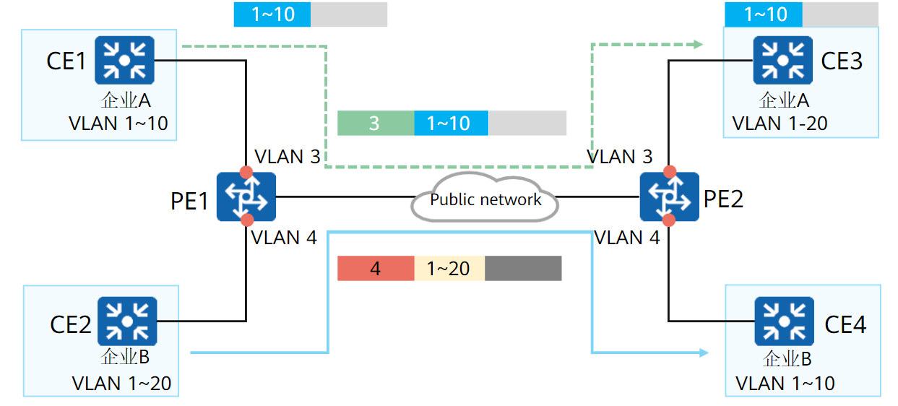
配置：
LSW5:
[LSW5]v 100
[LSW5]int g0/0/2
[LSW5-GigabitEthernet0/0/2]qinq vlan-translation enable # 开启灵活QinQ
[LSW5-GigabitEthernet0/0/2]port hybrid untagged vlan 100 200 # 设置hybrid口,剥离vlan 100 200
[LSW5-GigabitEthernet0/0/2]port vlan-stacking vlan 10 stack-vlan 100 # 给vlan10套上vlan100
[LSW5-GigabitEthernet0/0/2]port vlan-stacking vlan 20 stack-vlan 200 # 给vlan20套上vlan200
QinQ隧道出入口要进行相同的配置
以太网交换安全
端口隔离
端口隔离的目的是让同一个VLAN中的设备仍然可以隔离广播域
类似Mux-VLAN的隔离型子VLAN，但与之不同，端口隔离并不会影响三层数据交换，Mux-VLAN目前无法三层转发
从实现流过滤的角度看，三层可以通过acl，二层流过滤并不方便，端口隔离可以实现二层的简单过滤
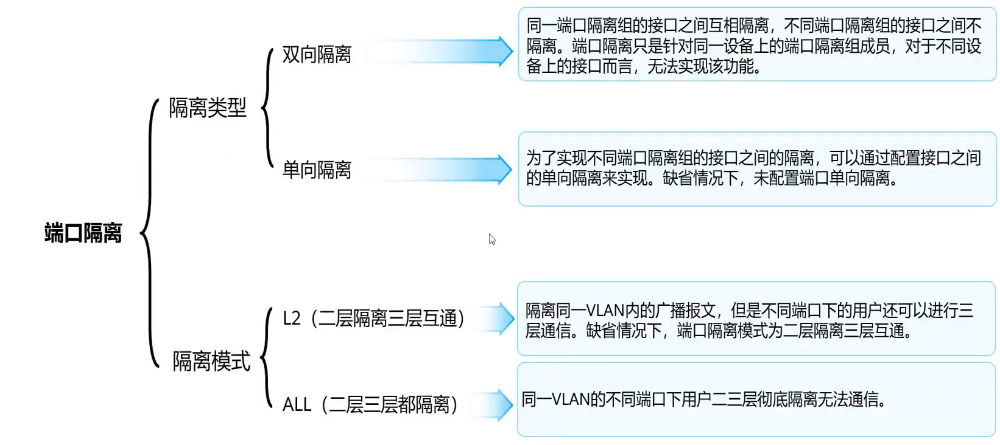
端口组的应用与配置
在配置交换机端口时，往往有很多端口的配置是重复的，这时一个个敲就很麻烦
可以通过将多个端口划分进组的方式，一次配置多个端口
port-group 1 # 开启端口组1
group-member GigabitEthernet 0/0/1 to GigabitEthernet 0/0/4 # 将g0/0/1到g0/0/4口划入端口组
p l a # 简写，port link-type access
p d v 10 # 简写,port default vlan 10
此时在组里的配置将同时应用在端口组内的所有接口上
端口隔离模式
- L2模式：同一VLAN二层隔离但三层可以通信
- ALL模式：同一VLAN二层和三层都无法通信
注意是同一VLAN，不同VLAN还是按VLAN间通信的规则处理
[Huawei]port-isolate mode ?
all All
l2 L2 only
默认是L2模式
端口隔离的配置
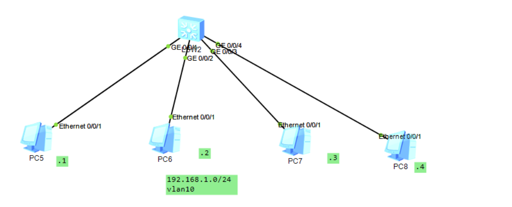
双向端口隔离配置
双向端口隔离实现同一隔离组的内复数端口间的相互隔离
1、在端口配置隔离组后
2、如果数据包的入端口和出端口属于同一隔离组，那么交换机将丢弃该数据包
- 相同隔离组端口下的主机不同互通
- 不同隔离组端口下的主机可以互通
- 一个端口可以配置多个隔离组
interface GigabitEthernet0/0/1 # 进入0/0/1口
port-isolate enable group 1 # 开启端口隔离，设置隔离组为1
port-isolate enable group 2 # 开启端口隔离，设置隔离组为2
单向端口隔离
单向端口隔离实现不同隔离组间的端口隔离
int g0/0/1
am isolate GigabitEthernet 0/0/2
设置当前接口和指定接口的隔离，即当前接口不能访问指定接口
指定端口任然可以访问当前端口，但是由于没有回应报文，多数情况任然无法通信
MAC地址表安全
MAC地址表的类型
MAC地址表项分为三类：
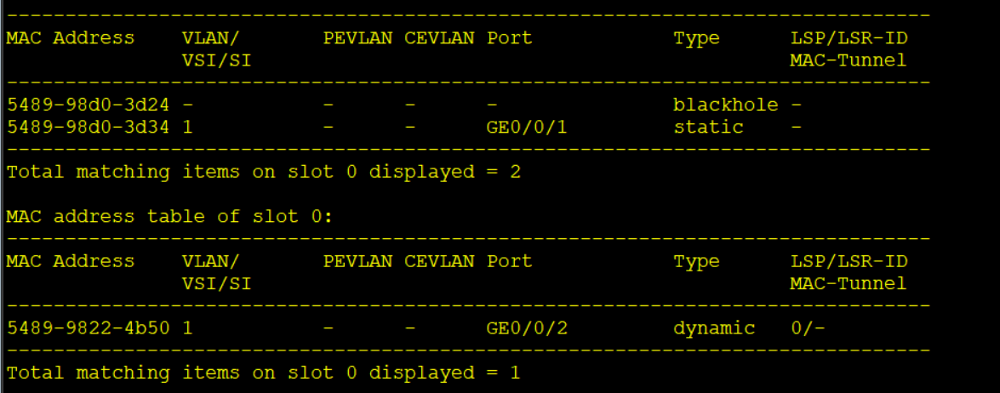
- 动态MAC表项（dynamic）
- 动态MAC表项是交换机自己学习的MAC地址表项
- 动态MAC表项存在老化时间，在系统复位、接口热插拔后丢失
- 静态MAC表项（Static）
- 静态MAC表项是由管理员手动下发的表项
- 静态MAC表项不老化，在系统复位、接口热插拔后也不会丢失
- 静态MAC表项绑定接口后，其他接口收到源MAC为该静态MAC的数据将会丢弃
- 黑洞MAC表项（Blackhole）
- 黑洞MAC表项是由管理员手动下发的表项
- 黑洞MAC表项不老化，在系统复位、接口热插拔后也不会丢失
- 配置黑洞MAC表项后，源或目的MAC为该黑洞MAC的数据将会丢弃
dispaly mac-address # 查看MAC转发表
MAC地址静态绑定
由于交换机会主动学习收到数据的源MAC地址更新动态的MAC地址表项，导致如果有人非法伪造MAC地址，就会造成MAC地址欺骗攻击
MAC欺骗攻击：攻击者伪造网关或其他终端的MAC地址，让交换机将去往该MAC的数据帧发给错误的端口
这种情况就可以使用MAC地址静态绑定防范
绑定方式：
# 绑定MAC地址
mac-address static 5489-98d0-3d34 GigabitEthernet 0/0/1 vlan 1
绑定MAC地址5489-98d0-3d34到g0/0/1,VLAN为1
对个人主机而言，静态MAC绑定非常麻烦并且没有价值，所以无需配置
对与服务器连接的二层端口而言，服务器位置固定且一般极具攻击价值，所以最好配置MAC地址静态绑定
黑洞MAC地址表项
mac-address blackhole 5489-98d0-3d34 {vlan 1}
设置5489-98d0-3d34为黑洞MAC
可选：指定vlan
黑洞MAC地址表项其实就是黑名单，丢弃源或目的MAC为该黑洞MAC的所有数据
限制MAC地址学习功能
还是由于交换机会主动学习收到数据的源MAC地址更新动态的MAC地址表项，如果有人不断变换自己的MAC地址向交换机发送数据，就会导致MAC地址泛洪攻击
MAC泛洪攻击：攻击者发送大量源MAC不同的数据帧，导致交换机无法正常转发数据帧，从而将数据帧全部泛洪
为了解决这个问题，可以有管理员手动限制或者关闭MAC地址的学习功能
限制MAC地址表的学习功能
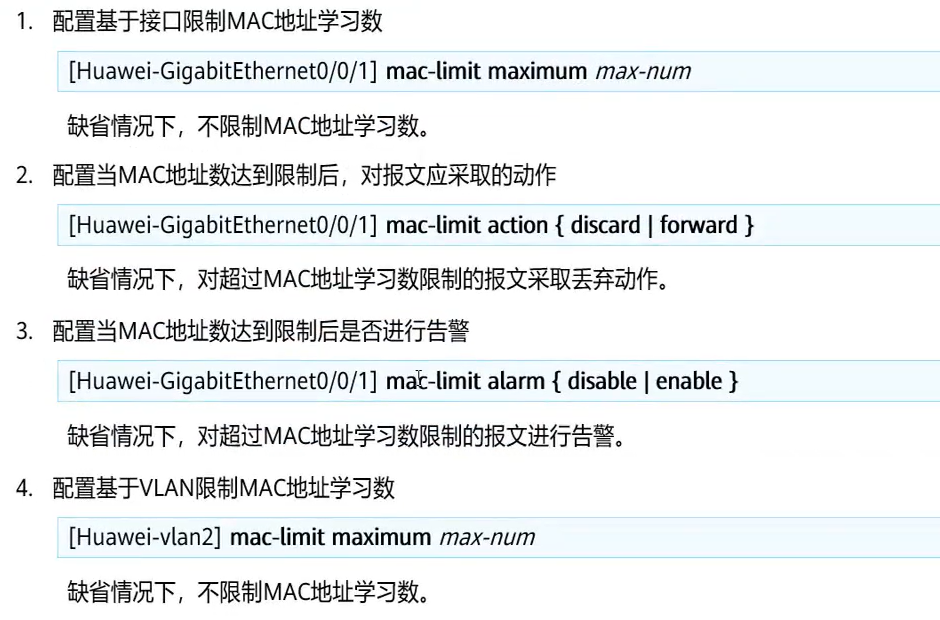
MAC地址表安全的问题在于限制后只是进行告警，这样的后果就是查找麻烦，而且动作太少
比如拿集线器连接网口，扩展上网的设备，此时虽然交换机上学习的MAC多了，但MAC地址表安全只是告警却不禁止。如果网络中没有网管系统，网络管理员一人维护几百设备，除非正好登录了这个设备，否则连告警信息都看不到
所以一般不使用MAC地址表安全相关功能限制MAC地址学习数量
关闭MAC地址学习功能
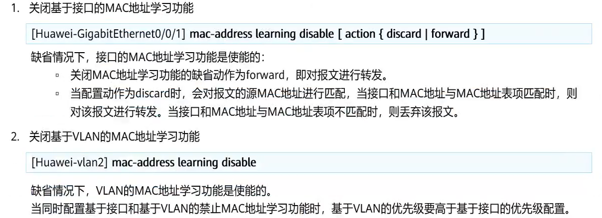
限制或禁止MAC地址学习这个功能端口安全做的更好
端口安全
端口安全可以看做MAC地址表安全的升级版
端口安全相关措施和MAC地址表安全相关措施的思想一致，但是效果更好
交换机会主动学习数据包源MAC地址的特性会被非法利用
- MAC泛洪攻击：攻击者发送大量源MAC不同的数据帧，导致交换机无法正常转发数据帧，从而将数据帧全部泛洪
- MAC欺骗攻击：攻击者伪造网关或其他终端的MAC地址，让交换机将去往该MAC的数据帧发给错误的端口
MAC地址表安全可以解决上述问题，但是不够优秀。
端口安全可以有效的解决上述问题
端口安全开启命令
默认不开启端口安全
[Huawei]int g0/0/1
[Huawei-GigabitEthernet0/0/1]port-security enable
安全MAC转发表
当一个端口开启了端口安全后，原来的MAC地址表就会变成安全MAC转发表
安全MAC地址表有【安全动态MAC地址表项】security 和【安全静态MAC地址表项】sticky
这两者的表现形式和【普通动态/静态MAC地址表项】完全一致
默认情况下：
- 开启端口安全的接口只允许学习一个MAC地址
- 学习到的MAC地址表项不会老化（包括安全动态地址表项）【前提：设备不重启，端口不down】
使用以下命令修改：
# 设置该端口允许学习的MAC表项条数
[Huawei-GigabitEthernet0/0/1]port-security max-mac-num 10
# 设置老化时间（安全动态表项的老化时间）
[Huawei-GigabitEthernet0/0/1]port-security aging-time 5 type ?
absolute Absolute time # 绝对老化
inactivity Inactivity time # 相对老化
[Huawei-GigabitEthernet0/0/1]port-security aging-time 5 type inactivity
设置老化时间为5分钟，老化模式为相对老化
老化时间有两个模式：
- 绝对老化：从第一次学习到一个MAC开始计时，到指定老化时间一定老化，中途再次学习到该MAC不会刷新老化时间
- 相对老化：从第一次学习到一个MAC开始计时，中途再次学习到该MAC，老化时间重新计时
安全MAC地址表静态绑定
和静态绑定的MAC表项一样，静态安全MAC地址表也不会随着交换机重启而丢失
绑定方式有两种：
# 绑定单个MAC地址
[Huawei-GigabitEthernet0/0/1]port-security mac-address sticky HH-HH-HH
# 绑定全部MAC地址（MAC地址粘滞绑定）
[Huawei-GigabitEthernet0/0/1]port-security mac-address sticky
- 单一绑定：手动MAC绑定到接口
- 粘滞绑定：交换机自动将此端口学习到的安全动态MAC全部静态绑定，直到MAC地址数达到设定的最大值
端口惩罚动作
如果端口MAC地址数达到设定的最大值，那么之后再有其他MAC经过就会执行惩罚动作，有三个动作
[Huawei-GigabitEthernet0/0/1]port-security protect-action ?
protect Discard packets # 丢弃数据
restrict Discard packets and warning # 丢弃数据并发送告警
shutdown Shutdown # shutdown端口
默认动作是restrict: 丢弃数据并发送告警
MAC地址表漂移的防止与检测
MAC地址表漂移的原理
MAC地址漂移指设备上一个接口学习到的MAC地址在同一VLAN中另一个接口上也学习到，后学习到的MAC地址表项覆盖原来的表项的现象。
正常情况下，网络中不会在短时间内出现大量MAC地址漂移的情况。出现这种现象一般都意味着网络中出现环路，形成广播风暴。【频繁MAC地址表漂移往往是环路的附带产物】
因此，可以利用MAC地址表漂移现象来监控网络中是否成环
防止MAC地址表漂移
网络中产生环路或者非法用户攻击网络都会导致MAC地址表漂移
有两种解决办法
1、修改接口上MAC地址学习优先级
- 当不同接口学习到相同的MAC地址时，高优先级接口学到的表项可以覆盖低优先级学到的表项
2、不允许相同优先级的同一MAC覆盖原有的表项
- 优先级相同：后学到的表项不允许覆盖先学习的表项
- 优先级不同：高优先级学到的表项可以覆盖低优先级学到的表项
MAC地址漂移检测
当交换机开启MAC地址漂移检测后，交换机可以察觉到MAC地址表学习接口的变化
如果察觉发生了MAC地址学习接口发生连续跳变现象，就认为发生了MAC地址表漂移
按检测的范围，MAC地址表漂移检测可以分为两种：
基于VLAN的MAC地址漂移检测
可以检测指定VLAN下的所有MAC地址是否发生漂移
可以指定发现漂移后的具体动作：
发送告警信息：默认，只发送告警不做其他处理
接口阻断：根据设定的阻塞时间对接口进行阻断，并关闭接口收发报文的能力
- 当指定block-mac参数时，将不阻断整个接口，而是按照发生漂移的MAC地址进行流量阻断。
MAC地址阻断：只阻塞发生漂移的MAC地址，接口下其他业务不受影响
全版本交换机都默认在全VLAN下开启了基于VLAN的MAC地址漂移检测
基于全局的VLAN地址漂移检测
可以检测设备上所有MAC是否发生了漂移
检测到漂移后只能发出告警
发现漂移后接口的动作
- error-down：将对应接口状态置为error-down，不再转发数据
- quit-vlan： 退出当前接口所属的VLAN
MAC地址漂移配置
MAC地址漂移检测配置
vlan 10 # 进入VLAN
loop-detect eth-loop ?
alarm-only 默认，仅发送告警
block-mac 可选，根据MAC地址阻断，不配置此选项就是根据接口阻断。
block-time 指定阻断时间。
retry-times 配置在block-time之后，指定接口永久阻断的重试次数
例如：loop-detect eth-loop block-mac block-time 10 retry-times 5
根据MAC地址阻断 阻断时间10s,重试次数5次
dis loop-detect eth-loop vlan [vlan-id] # 查看MAC阻断信息
reset loop-detect eth-loop vlan [id] {all | interface| mac-address} # 清除指定vlan下的MAC或接口阻断
当系统检测到某VLAN内有MAC地址发生漂移且发生漂移的接口或MAC地址被永久阻断时，只能通过配置解除指定VLAN下的接口阻断或MAC地址阻断来恢复到正常状态。
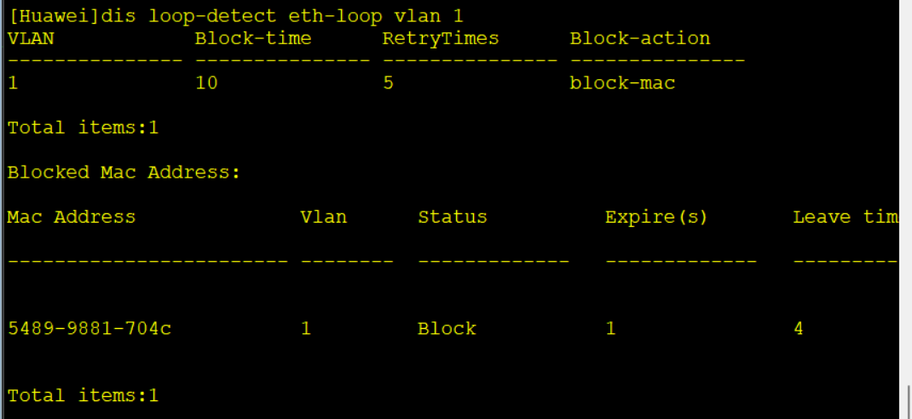
防止MAC地址表漂移配置
interface GigabitEthernet0/0/1
mac-learning priority 3 # 设置接口学习到MAC地址的优先级
undo mac-learning priority 0 allow-flapping # 不允许相同优先级的同一MAC覆盖原有的表项
全局MAC地址漂移配置
系统视图：
mac-address flapping detection # 开启全局MAC地址漂移检测
# 在接口中配置动作,不做配置就只是告警
[Huawei-GigabitEthernet0/0/1]mac-address flapping trigger ?
error-down The interface was shutdown because of mac-flapping
quit-vlan The interface quit vlan because of mac-flapping
MACsec
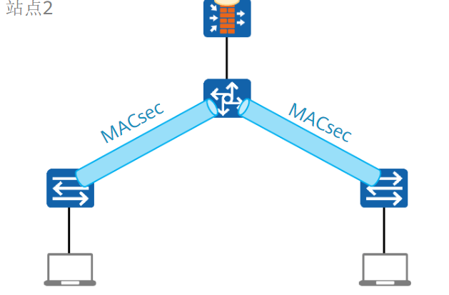
同IPsec是提供了三成数据的加密传输，MACsec提供了二层的加密传输，但目前不常用
MACsec只有在对安全性要求非常高的网络中才有用武之地，一般的网络环境中并不需要MACsec
原理
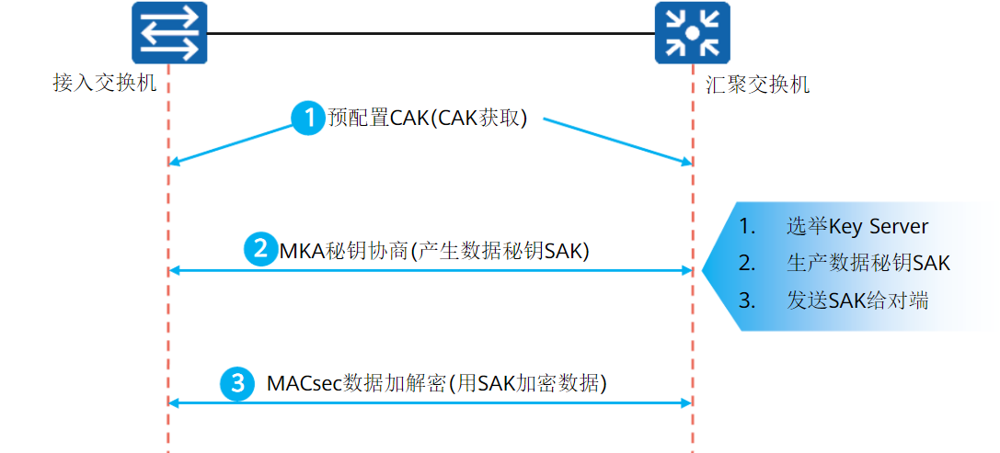
大致同IPsec，看IPsec就能明白MACsec的做法
配置：华为文档里我都没找到配置，略了，什么交换机支持了现查
交换机流量控制
当设备某个二层以太网接口收到广播、未知组播或者未知单播报文时，会向同一VLAN的所有接口发送这些报文
如果这个泛洪的报文流量很大，就会对现有的业务造成冲击，影响其他业务
注：上面的说法我不是很认可，但华为的ppt是如此说的
这里我很认可华为产品文档的说法：网络拥塞会导致丢包，流量控制是一种防止网络拥塞导致丢包的技术
如果本端发生拥塞
为了解决这个问题，就需要对交换机的流量进行控制
交换机流量控制可以分为流量抑制和风暴控制
流量抑制
流量抑制主要通过配置阈值来限制流量，当超过阈值时，设备会丢弃超额的流量
简单说就是限速，超过规定速度的流量就直接丢掉让设备重发（并不是丢掉整个报文，而是丢掉超速的部分，从而让整体速度在阈值之下）
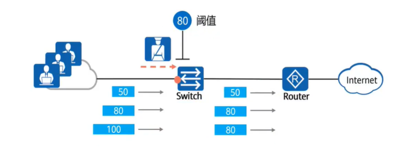
流量抑制的配置位置
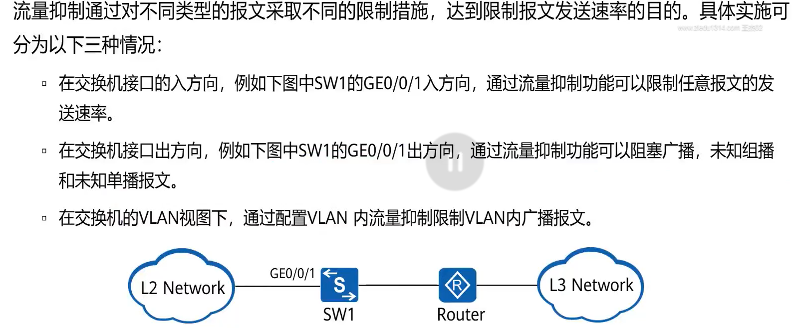
一般来说配置在入接口准没错
由于模拟器模拟不出大流量广播的场景，所以这里配置略
以后需要配置了查产品文档
风暴控制
风暴控制和流量抑制的原理相同，都是规定一个阈值，处理超过阈值的数据
但风暴控制的处理方式比流量抑制更加“极端”
- 流量抑制：丢掉超过规定速度的部分流量，并不是丢掉整个报文
- 风暴控制：只要超速，整个报文都丢掉，甚至关闭接口
风暴控制有两个动作
- 阻塞报文（Block）：阻塞超速的整个报文
- 关闭接口（Error-down）：关闭收到超速现象的接口
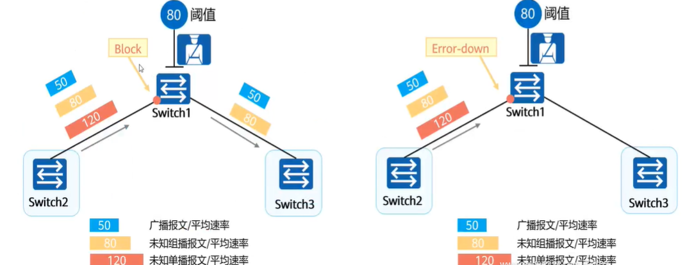
配置略
DHCP Snooping
DHCP Snooping 是DHCP的安全防范技术，用于保证DHCP客户端可以顺利从DHCP得到ip地址
由于DHCP在网络中的广泛应用，网络中也出现了很多针对DHCP的攻击，最常见的有四类：
DHCP Server仿冒者攻击：
DHCP Server 和 DHCP Client 之间没有认证机制，攻击者将自己伪造成DHCP服务器给其他网络设备分配IP地址和其他网络参数，如果伪造的DHCP服务器分配的IP地址是错误的，就会对网络造成很大的影响
解决方法：DHCP Snooping 信任功能
DHCP Server 拒绝服务攻击（DHCP 饿死攻击）：
攻击者不断更改MAC地址或CHADDR，向DHCP服务器请求IP地址，使IP地址池中的地址耗尽。导致其他终端设备无法获取IP地址
解决方法：使能设备的DHCP Snooping功能后，配置设备接口允许接入的最大DHCP用户数，或者使用端口安全技术
DHCP 报文泛洪攻击：
攻击者向DHCP服务器发送大量的DHCP Discover报文，导致服务器无法处理正常的DHCP请求，严重时可能导致服务器瘫痪
解决方法：使能设备的DHCP Snooping功能时，同时使能设备对DHCP上送报文的速率检测
DHCP中间人攻击：
DHCP仿冒者攻击升级版，一边将自己伪造成DHCP服务器让正常客户端将DHCP各类消息发送给自己，一边伪造成正常客户端将收到的DHCP各类消息转发给正常的DHCP服务器。让自己成为一个“代理”，从而获取所有DHCP信息
解决方法：DHCP绑定表检查
DHCP Snooping 通过两种功能防止上述攻击
DHCP Snooping 信任功能
DHCP Snooping信任功能是通过将连接DHCP服务器的端口划入信任接口的方式防止DHCP中间人攻击和DHCP仿冒者攻击
DHCP Snooping将接口划分为信任接口和非信任接口
- 信任接口：正常转发收到的DHCP应答报文
- 非信任接口：接收到DHCP服务器响应的DHCP应答报文（DHCP Ack、DHCP Nak和DHCP Offer）后，丢弃该报文
默认的，除了设为信任接口的接口，其他接口都是非信任接口
配置信任功能
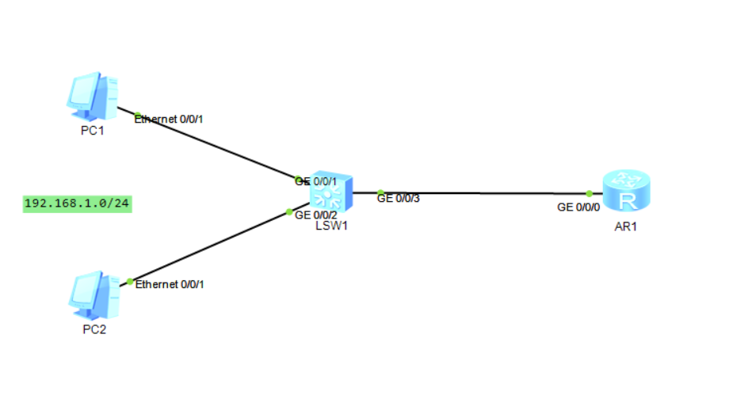
AR1上配置好DHCP
LSW1:
dhcp enable # 开启dhcp
dhcp snooping enable ipv4 # 使能dhcp snooping
接口使能DHCP Snooping
interface GigabitEthernet0/0/3 # 进入接口
dhcp snooping enable # 使能DHCP snooping
dhcp snooping trusted # 设置接口为dhcp snooping信任接口
VLAN使能DHCP Snooping
vlan 1 # 进入VLAN
dhcp snooping enable # 使能DHCP snooping
# 设置vlan1中的g0/0/1口为dhcp snooping信任接口
dhcp snooping trusted interface GigabitEthernet0/0/1
查看命令
display dhcp snooping global # 查看全局DHCP Snooping的信息
display dhcp snooping interface g0/0/1 # 查看接口下的DHCP Snooping信息。
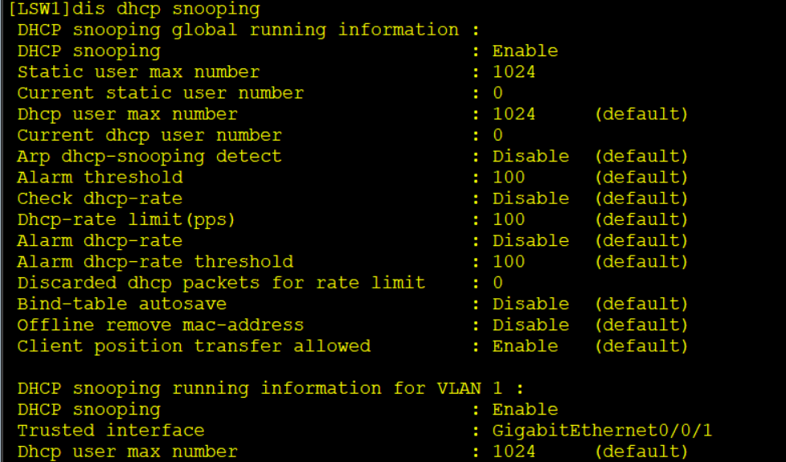
DHCP Snooping 分析功能
DHCP Snooping分析功能会根据DHCP ACK报文生成DHCP绑定表
DHCP绑定表分两种：
- 动态绑定表：使能了DHCP Snooping功能后自动生成
- 静态绑定表：手动配置的
DHCP绑定表记录了DHCP客户端IP地址与MAC、租期、收到ACK报文的接口等信息
通过对报文和绑定表的匹配检查，可以有效防止DHCP攻击行为
DHCP饿死攻击比较特殊
由于DHCP分配IP时会根据MAC地址转换为
CHADDR参数，如果CHADDR值不同，就认为是不同的终端设备但是DHCP Snooping绑定表没有记录CHADDR
所以黑客通过伪造CHADDR值，可以绕过DHCP绑定表攻击服务器
防范方法：配置DHCP Snooping ,使能检查CHADDR和MAC的匹配关系
注意：DHCP Snooping功能只是生成了绑定表，并对收到的报文进行检查。但是检查到攻击之后的动作，是IPSG处理的
配置分析功能
开启DHCP Snooping功能后，默认生成绑定表，无需其他配置
display dhcp snooping user-bind {vlan 1} # 查看DHCP Snooping绑定表信息。
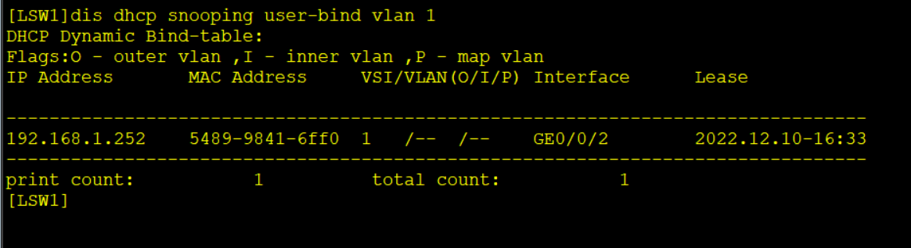
IPSG（IP Source Guard）
IPSG：IP源校验
IPSG是基于绑定表（DHCP Snooping 绑定表）检查二层接口收到的IP报文的安全验证技术
配置了IPSG的设备中，只有匹配绑定表的报文才允许通过，不匹配的报文将会丢弃
- 静态绑定表和动态Snooping绑定表都在IPSG的匹配范围内
默认的，如果只配置了IPSG但是没有开启绑定表(DHCP Snooping)，设备将会拒绝除了DHCP报文外的所有报文
IPSG只能检测IP报文，非IP报文：ARP、PPPOE等无法匹配
IPSG接口角色
和DHCP Snooping一样，IPSG同样将接口分为信任接口和非信任接口
在配置了DHCP Snooping的情况下，DHCP Snooping信任接口就是IPSG信任接口，DHCP Snooping非信任接口就是IPSG非信任接口
- IPSG信任接口：信任接口收到的报文不会经过IPSG检查
- IPSG非信任接口：
- 接口使能IPSG：通过接口的报文将会经过IPSG检查
- 接口未使能IPSG：通过接口的报文不会经过IPSG检查
如果在VLAN中使能IPSG功能，该VLAN中的所有接口均使能IPSG功能
IPSG过滤方式
IPSG检查绑定表中的MAC地址、IP地址、VLAN ID、入接口四项
匹配静态绑定表时：四项全部检查
匹配动态绑定表时：缺省下四项全部检查，但管理员可以设置检查的组合
IPSG配置
开启DHCP静态或者动态绑定表后，IPSG默认没有配置
想要对被绑定表检查到的非法报文进行处理，就需要开启IPSG功能
IPSG基于接口或者基于VLAN都可以配置，并且配置大体相同
进入接口或者试图后
ip source check user-bind enable # 使能IPSG
ip source check user-bind check-item {vlan | interface} # 配置报文检查项
注：如果是静态绑定表项，无法手动配置检查项，所以静态绑定表项的IPSG不需要配置此项
ip source check user-bind alarm enable # 使能接口检查告警功能
ip source check user-bind alarm threshold 100 # 告警阈值，默认为100
检查相关命令
display ip source check user-bind {interface XX | vlan XX} # 检查接口或者VLAN下IPSG的配置信息
display nd snooping user-bind all [ verbose ] # 查看ND Snooping动态绑定表信息
# 带verbose参数可以查看到IPSG的状态。
RSTP&&MSTP
快速生成树协议（RSTP）
由于传统的STP协议存在收敛速度慢的问题，所以推出了RSTP（快速生成树协议）
RSTP的配置与传统STP完全一致，但是机制不同
传统的STP协议为了避免在拓扑还没有稳定下来就开启数据的转发导致环路问题
规定了两个15s的等待时间
Listening -> Learning :等待整个拓扑STP角色选举完毕
Learning -> Forwarding：等待整个拓扑mac地址表学习完毕
如今的网络设备处理能力得到了极大的增强，自然不需要等待15秒之久，stp淘汰
RSTP是基于传统STP的改进，相比于STP关注端口状态，RSTP更关注端口的角色
RSTP改进点
端口角色
RSTP将阻塞端口AP分为了两种端口角色
注：任何生成树，都是先选端口角色，然后再到达对应的转发状态
代替端口（Alternate）：代替端口作为设备根端口
RP的的备份，当设备上的根端口连接链路断开时代替端口立即成为根端口，无需进行状态跃迁- 代替端口提供从设备到根的备用路径
备份端口（Backup）：备份端口是设备指定端口
DP的备份，当设备指定端口出现故障时，备份端口立即成为指定端口而无需进行状态跃迁备份是自己连自己造成的阻塞，一般不会出现。
常见的情况有：两条线连接同一个集线器成环；一条线连接设备的两个端口成环
端口状态
RSTP更加关注端口的角色，所以将STP五种状态降为三种
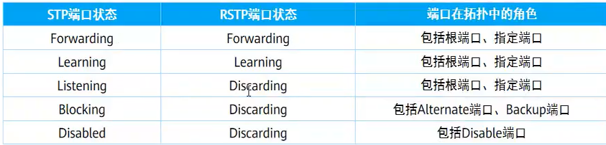
- Discarding：不转发流量也不学习MAC地址的端口
- Learning：不转发用户流量但是正在学习MAC地址的端口（这是一个过程）
- Forwarding：即转发用户流量又学习MAC地址的端口
由于P/A机制存在，RSTP的状态跃迁是秒级收敛的，如果P/A机制失效，则仍然进行传统STP的30秒收敛
BPDU报文
RSTP对BPDU报文的利用更加高效
- 改进后的配置BPDU称为RST - BPDU
- RST - BPDU由于改变了Type字段，传统的STP不兼容RSTP
拓扑中不再只有根桥才会发送配置BPDU，拓扑稳定后，无论根桥设备是否传来BPDU，非根桥都会按照Hello Time的时间间隔(2s)发送配置BPDU
如果一个端口在三个Hello Time周期（Hello time * 3 = 6s）内没收到配置BPDU，就认为该设备于邻居断开，于是发送自己的BPDU
P/A机制
P/A机制是实现RSTP快速收敛而无需等待的关键，P/A带来了来回确认机制和同步变量机制，不再需要等待计时器超时来保障无环路。
P/A机制前提：
- DP端口处于Discarding状态
- 该DP端口所在链路是p2p全双工链路
P/A机制选举过程
初始状态，链路两端均认为自己是DP，并且端口处于
Discarding状态各设备随机发送BPDU PA置位报文(P、A字段均为1)，选举链路两端的DP和RP/AP
（收到的BPDU没有其他端口已经收到的好，则认为是AP；比其他端口收到的好，则认为是RP）
选举为RP/AP的设备会将自身所有的非边缘端口进行sync同步置位，将这些端口的状态设置为discarding
- sync机制：同步变量机制，也就是将非边缘端口堵塞。
接着P/A机制向下游逐跳重复此过程，终止于存在DP和AP的链路上。
- 当设备P/A后发现本端接口为RP，但是此设备已经有接口变更为RP，那么此接口转为AP，环路中P/A机制结束
P/A机制实现了STP秒级收敛
边缘端口
由于STP协议的特性，一旦网络中topo发生变化，STP就需要重新进行角色选举
所以当网络主接入一台不参与STP的设备时(终端、路由器等)，该设备连接的端口同样需要角色选举
由于P/A机制，运行STP的端口发送BPDU给不运行STP的设备，并等待回复
但不运行STP的设备明显不能回复，所以交换机端口等待三个Hello Time周期后将自己变为DP
边缘端口不参与STP计算，直接成为DP
[Huawei-GigabitEthernet0/0/1]stp edged-port enable # 设备为边缘端口
拓扑变更机制
一旦有非边缘端口迁移到Forwarding状态，RSTP视为拓扑变更
将进行以下操作
- 为本设备所有的非边缘端口启动一个
TC While Time，该计时器是Hello Time的两倍（4s）- 在一个
TC While Time内，清空端口上学习的MAC地址 - 在一个
TC While Time内，由非边缘端口向外发送RST BPDU，其中TC置位
- 在一个
- 其他设备收到TC置位的RST BPDU后，清空出接收端口外所有端口的MAC地址，自己同样启动一个
TC While Time,重复上述操作
保护功能
BPDU保护
设置为边缘端口的接口，一旦收到BDPU，就会自动将端口更改为非边缘端口并重新进行生成树的计算
所以如果有人伪造RST BPDU攻击设备，就会引发网路震荡
启动BPDU保护后，如果边缘端口收到BPDU会立即置为error down状态并通知网管系统，但不会更改为非边缘端口
[Huawei]stp bpdu-protection
根保护
根保护确保根桥不会因为一些网络问题而改变，比如收到恶意攻击者伪造的更优BPDU
根保护功能只有指定端口可以开启
开启根保护功能的端口收到更优BPDU时进入Discarding状态并不再转发报文，如果在两倍Forward Delay时间里一直没有收到优先级更高的配置BPDU，指定端口恢复正常转发状态
[Huawei-GigabitEthernet0/0/1]stp root-protection
配置根保护的端口不能配置环路保护
环路保护
如果链路上单向链路故障，替代端口认为链路故障变为根端口，此时网络中没有了阻塞端口，网络发生环路
开启环路保护功能后，如果根端口或指定端口长时间收不到BPDU时，向网管发送信息并进入Discarding状态，角色切换为指定端口，直到故障恢复
[Huawei-GigabitEthernet0/0/1]stp loop-protection
防止TC-BPDU置位攻击
根据RSTP特性，当拓扑发生改变时，设备发送TC置位的BPDU使链路重新学习
但如果有攻击者伪造TC置位报文，就会导致设备频繁删除MAC地址表
启用防TC置位攻击功能后，可以配置单位时间内设备处理TC置位报文的次数
多生成树协议（MSTP）
STP的原理是选一个最差的端口将其阻塞。这意味这网络中有链路被浪费
为了解决浪费问题，提出了MSTP
方法就是再一个环路中运行多个生成树，每个生成树阻塞不同的链路
MSTP 将一个或者多个vlan映射到一个
instance实例，再基于此实例计算生成树，同一实例的vlan使用同一生成树
配置
stp region-configuration # 进入MSTP域
region-name STP # 设置域名
revision-level 12 # 设置域等级
instance 1 vlan 10 30 # 将vlan 10 20 划入实例1
instance 2 vlan 20 # 将vlan 20 划入实例2
active region-configuration # 提交此配置
stp instance 1 root primary # 设置此交换机为实例1的主根
stp instance 2 root secondary # 设置此交换机为实例2的备用根
- MSTP中同属一个域的实例在同一个MSTP网络中，对单域MSTP网络来说，所有MSTP交换机必须在同一个域中
- 域名和域等级唯一标识一个MSTP域
- 默认的，同一型号的设备拥有相同的域名和域等级
由于同一型号的设备默认拥有相同的域名和域等级，所以region-name和region-level两个参数一般可以不用配置
但为了便于后期维护，最好配置一个值
当域设置错误时，接口状态为MAST
堆叠和集群
堆叠（iStack）【华三中称为（IRF）】和集群（CSS），同MSTP、VRRP、链路聚合等技术一样，都是用于提高网络可靠性的技术
做法是将复数设备堆叠为一台逻辑设备使用，堆叠后在堆叠系统中任意设备都有系统内所有设备的接口以及资源
基本概念
盒式交换机的堆叠称为堆叠，最多可以支持8台设备
框式交换机的堆叠称为集群，有且只能有两个框式交换机集群
堆叠和集群除了应用的对象和配置命令有所区别，原理都一样
堆叠系统的角色
堆叠系统中一共有三个角色
1、主交换机（Master）：管理整个堆叠系统的交换机，堆叠中只能有一台主交换机
2、备交换机（Standby）：主交换机的备用，当主交换机故障时变为主交换机，堆叠中只有一台备交换机
3、从交换机（Slave）：除主备交换机外的所有交换机都是从交换机
备交换机故障时由主交换机在从交换机中重新选举备交换机
堆叠ID
堆叠ID（Slot ID）是堆叠系统中成员交换机的槽位号，堆叠ID唯一确定堆叠系统中的一台成员交换机
- 在
G1/0/2这个端口编号中，1就是交换机的槽位号，2是端口编号
堆叠优先级
堆叠优先级用于选举堆叠系统中成员交换机的角色
堆叠选举原则：
堆叠系统中先启动的设备为主设备
如果系统中设备已经启动，则优先级值大的为主设备
如果优先级值相同，则MAC地址小的为主设备
【初次启动堆叠系统最好先做好各成员交换机堆叠配置，然后连接堆叠线缆】
如果先连接线缆再配置，按原则1，先配好堆叠并且启动的会称为主交换机。优先级无效
堆叠系统建立
- 物理连接：根据网络需求，选择适当的连接方式和连接拓扑，组建堆叠网络。
- 主交换机选举：成员交换机之间相互发送堆叠竞争报文，并根据选举原则，选出堆叠系统主交换机。
- 拓扑收集和备交换机选举：主交换机收集所有成员交换机的拓扑信息，向所有成员交换机分配堆叠ID，之后选出堆叠系统备交换机。
- 稳定运行：主交换机将整个堆叠系统的拓扑信息同步给所有成员交换机，成员交换机同步主交换机的系统软件和配置文件，之后进入稳定运行状态。
成员交换机同步主交换机系统时会重启
设备堆叠ID缺省为0。堆叠时由堆叠主对设备的堆叠ID进行管理，当堆叠系统有新成员加入时，如果新成员与已有成员堆叠ID冲突，则堆叠主从0～最大的堆叠ID进行遍历，找到第一个空闲的ID分配给该新成员。
- 因此如果不手动指定堆叠ID，由于启动顺序等原因，最终堆叠系统中各成员的堆叠ID是随机的
堆叠ID和优先级都应在启动堆叠系统前配置好，主交换机自动分配对运维不友好
物理连接的方式
堆叠系统可以通过两种接口连接：
专用的堆叠口以及堆叠线缆连接
支持堆叠的设备一般会有两个堆叠口和配套的堆叠线缆，专用的堆叠口也称堆叠卡
逻辑堆叠口绑定业务口（网线接口）连接
如果没有堆叠线缆，可以手动创建逻辑堆叠口，然后绑定业务口进行堆叠
- 有且只能创建两个逻辑堆叠口
- 一个逻辑堆叠口可以绑定多个业务接口
无论是堆叠卡还是逻辑接口，一个设备有且只能有两个堆叠接口
连接时，堆叠设备之间要交叉连接，即设备A堆叠1口连接设备B堆叠2口
物理连接拓扑结构
| 连接拓扑 | 优点 | 缺点 | 适用场景 |
|---|---|---|---|
| 链形连接 | 首尾不需要有物理连接，适合长距离堆叠。 | 可靠性低：其中一条堆叠链路出现故障，就会造成堆叠分裂。堆叠链路带宽利用率低：整个堆叠系统只有一条路径。 | 堆叠成员交换机距离较远时，组建环形连接比较困难，可以使用链形连接。 |
| 环形连接 | 可靠性高：其中一条堆叠链路出现故障，环形拓扑变成链形拓扑，不影响堆叠系统正常工作。堆叠链路带宽利用率高：数据能够按照最短路径转发。 | 首尾需要有物理连接，不适合长距离堆叠。 | 堆叠成员交换机距离较近时，从可靠性和堆叠链路利用率上考虑，建议使用环形连接。 |
堆叠系统的管理
由于堆叠的本质就是将多个设备在逻辑上作为一台设备使用，并且使用成员交换机的所有资源
不管通过哪台成员交换机登录到堆叠系统，实际登录的都是主交换机。以此管理整个堆叠系统
跨设备的链路聚合与流量优先转发
由于堆叠系统中的设备在逻辑上一台设备，自然可以通过Eth-Trunk口和其他设备之间链路聚合
由于链路聚合有负载分担的特性，有时流量会形成次优路径通过堆叠口传输数据，所以需要启动流量优先转发
即从本设备进入的流量，优先从本设备相应的接口转发出去。如果本设备无出接口或者出接口全部故障，才会从其它成员交换机的接口转发出去。
具体怎么配置，华为没说
堆叠成员的加入和退出
堆叠成员加入分为新成员交换机带电加入和不带电加入
新成员交换机加入堆叠系统时，建议使用不带电加入
不带电加入
- 新加入的交换机连线上电启动后，由于选举原则1(启动顺序)，会选举为从交换机，堆叠系统中原有主备从角色不变。
- 主交换机更新堆叠拓扑信息，并同步到其他交换机，然后向新交换机分配堆叠ID（如果没有手动配置堆叠ID）
- 新加入的交换机同步堆叠系统，重启，进入稳定运行状态
带电加入
带电加入也称为堆叠合并，指两个堆叠系统合并为一个堆叠系统
- 两个堆叠系统的主交换机竞争，选举出一个更优的主交换机。
- 竞争失败的堆叠系统所有成员交换机重启，加载新的系统
- 新主交换机更新拓扑，同步到所有成员交换机
通常不建议带点加入，因为可能导致正在运行业务的设备重启，导致业务中断
堆叠成员退出
根据交换机角色不同，对堆叠系统的影响不同
1、主交换机退出
- 备份交换机升为主交换机，重新计算拓扑同步到其他交换机
- 指定新的备交换机
2、备交换机退出
- 主交换机重新计算拓扑同步到其他交换机
- 主交换机指定新的备交换机
3、从交换机退出
- 主交换机重新计算拓扑同步到其他交换机
堆叠的分裂和多主检测
堆叠分裂
不正常的成员交换机退出，称为堆叠分裂，指稳定运行的堆叠系统中带电移出部分成员交换机，或者堆叠线缆多点故障导致一个堆叠系统变成多个堆叠系统。
根据原堆叠系统主备交换机分裂后所处位置的不同，堆叠分裂可分为以下两类：
- 原主备交换机被分裂到同一个堆叠系统中
- 将移出的成员交换机的拓扑信息删除，并将新的拓扑信息同步给其他成员交换机
- 出的成员交换机检测到堆叠协议报文超时，将自行复位，重新进行选举
- 原主备交换机被分裂到不同的堆叠系统中
- 原主交换机所在堆叠系统重新指定备交换机，重新计算拓扑信息并同步给其他成员交换机
- 原备交换机所在堆叠系统将发生备升主，原备交换机升级为主交换机，重新计算堆叠拓扑并同步到其他成员交换机，并指定新的备交换机。
由于堆叠系统中所有成员交换机都使用同一个IP地址和MAC地址（堆叠系统MAC），一个堆叠分裂后，可能产生多个具有相同IP地址和MAC地址的堆叠系统。从而导致网络故障。
MAD多主检测
MAD(多主检测) 的目的是为了在发生堆叠分裂时最大程度的减少损失
链路故障导致堆叠系统分裂后，MAD可以实现堆叠分裂的检测、冲突处理和故障恢复，降低堆叠分裂对业务的影响。
MAD有两种检测方式
1、直连检测
堆叠系统分裂后，分裂后的两台交换机以1s为周期通过检测链路发送MAD报文进行多主冲突处理
通过中间设备直连：
通过一台交换机作为中转连接所有成员交换机，优点是节省线路和接口，缺点是多费一台交换机
Full-mesh(全互联)方式直连：
直接通过业务口使成员交换机全互联，优点是省钱，缺点是费接口
直连检测的两种方式没有直接区别，设备少或设备之间距离近优先考虑全互联，设备多或设备之间距离远有点考虑中间设备互联
2、代理检测
代理检测方式是在堆叠系统Eth-Trunk上启用代理检测，在代理设备上启用MAD检测功能。此种检测方式要求堆叠系统中的所有成员交换机都与代理设备连接，并将这些链路加入同一个Eth-Trunk内。
与直连检测方式相比，代理检测方式无需占用额外的接口，Eth-Trunk接口可同时运行MAD代理检测和其他业务【就是说两个堆叠系统之间可以相互代理】。
在代理检测方式中，堆叠系统正常运行时，堆叠成员交换机以30s为周期通过检测链路发送MAD报文。
堆叠成员交换机对在正常工作状态下收到的MAD报文不做任何处理；堆叠分裂后，分裂后的两台交换机以1s为周期通过检测链路发送MAD报文进行多主冲突处理。
单机代理
使用一台设备通过Eth-Trunk口进行代理检测
两套堆叠系统互为代理
MAD多主检测原理
堆叠分裂后，MAD冲突处理机制会使分裂后的堆叠系统处于Detect状态或Recovery状态。
Detect状态表示堆叠正常工作状态，Recovery状态表示堆叠禁用状态。
MAD冲突处理机制如下：
MAD分裂检测机制会检测到网络中存在多个处于Detect状态的堆叠系统，这些堆叠系统之间相互竞争
竞争成功的堆叠系统保持Detect状态，竞争失败的堆叠系统会转入Recovery状态
在Recovery状态堆叠系统的所有成员交换机上，关闭除保留端口以外的其它所有物理端口，以保证该堆叠系统不再转发业务报文。
堆叠升级
堆叠升级主要就是平滑升级值得一提，其他的就是该咋升级就咋升级
将成员交换机分为两个区域，从交换机在backup区，主交换机在active区
先升级backup，让active转发业务流量，然后升级active，让backup转发业务流量
平滑升级分三个阶段：
- 主交换机下发命令触发整个堆叠系统进入平滑升级状态，backup区各个成员交换机以新的系统软件进行启动。
- backup区以新版本建立一个独立的堆叠系统，并通知active区进入升级阶段，主控权由active区的主交换机转移到backup区的主交换机，backup区负责流量传输，active区进入升级过程。
- active区以新系统软件重新启动并加入backup区的堆叠系统，backup区的主交换机根据最终堆叠建立的结果发布升级的结果。
堆叠的配置
1、修改设备的堆叠id（华三默认为1）
2、配置设备的堆叠优先级，优先级（值）越大越优先
3、配置逻辑堆叠接口（有专门的堆叠口则不用配置，堆叠口必须是1口连接2口【交叉相连】）
【配置前需要先关闭对应的物理接口】
4、保存配置、重启设备
5、连接堆叠线缆【配置堆叠时最好先配置完毕再连线、否则堆叠主设备可能选举不正确(堆叠选举原则)】
华三交换机配置：
# 关闭要绑定到逻辑堆叠口的物理接口
int te1/0/49
sh
int te1/0/50
sh
qui
irf member 1 renumber 2 # 设置堆叠ID
irf member 2 priority 1 # 设置堆叠优先级（因为设置的ID还没启动，所以还是修改1的优先级）
irf-port 1/1 # 创建堆叠接口1/1,第一个1是堆叠ID
# 绑定物理接口
port group interface Ten-GigabitEthernet1/0/49
irf-port 1/2 # 创建堆叠接口1/2
port group interface Ten-GigabitEthernet1/0/50
# 开启设置好的物理接口
int te1/0/49
un sh
int te1/0/50
un sh
华为交换机配置
由于华为ensp模拟器无法做堆叠，只能先把命令贴上来
大体上还是和华三一致，只不过一个叫做irf,一个叫做stack
stack slot 0 renumber 1 # 设置堆叠ID，缺省情况下，华为设备的堆叠ID为0
stack slot 0 priority 2 # 设置堆叠优先级
interface stack-port 0/1 # 创建堆叠接口
port interface g0/0/24 enable # 绑定物理接口
其他命令
slave switchover # 执行堆叠主备倒换
stack timer mac-address switch-delay 60 # 堆叠系统MAC切换时间
undostack timer mac-address switch-delay # 立即切换MAC
reset stack configuration # 清楚堆叠所有配置
配置MAD多主检测
直连检测与单设备代理检测
堆叠系统代理检测
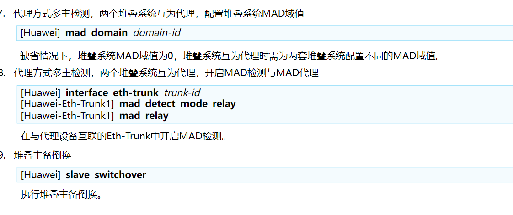
集群的配置
集群是框式交换机的堆叠，所以其思想和堆叠一致，不过是盒式交换机换成了框式交换机
角色从主备从变为一主一备
set css [id] [new-id] # 配置集群ID,缺省情况下，交换机的集群ID都为1
set css priority 1 # 配置集群优先级,缺省集群优先级为1
interface css-port 1 # 创建集群逻辑接口
port interface g0/0/1 enable # 绑定物理接口
css enable # 交换机使能集群功能，缺省情况下，交换机的集群功能未使能
set css mode {lpu | css-card} # 设备的集群连接方式,缺省情况下设备的集群连接方式与设备型号相关
OSPF高级技术
OSPF基础
OSPF是链路状态路由协议的一种，将AS（自治系统）划分为一个或多个逻辑区域
OSPF通过在广播域内泛洪LSA（链路状态通告）的形式发布路由，为了减少LSA在广播域内的交换，广播网络中的OSPF需要确立DR/BDR
P2P链路为非广播型网络，所以不需要确定DR/BDR
OSPF报文结构
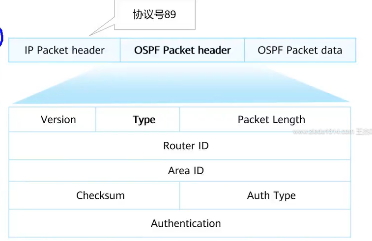
OSPF报头结构如图所示，标识了ROUTE-ID和区域ID
后面的OSPF Packet data就是具体的报文数据，如IA所学，有五种hello|DD|LSR|LSU|LSACK
HELLO报文结构
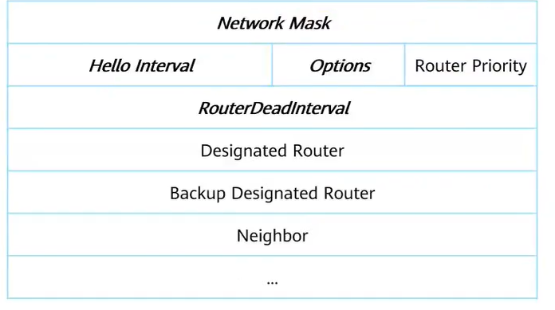
Network Mask：子网掩码
Hello Inter：发送Hello报文的时间间隔，华为默认为10s、思科默认为15s
Options：选项，共有E|MC|N/P三种
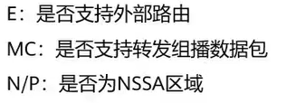
Route-Priority：DR优先级，默认为1
RouteDeadInterval：邻居失效时间；如果在一个失效时间内都没有收到新的Hello，则认为邻居失效，默认为40s
Designated Router： DR接口地址（最初，广播域中每个接口都认为自己是DR，该字段是自己的接口地址）
- 华为产品文档说最初是自己接口地址，但模拟器抓包结果全0，应该是文档更权威些
Backup Designated Router：BDR接口地址（最初状态为0.0.0.0）
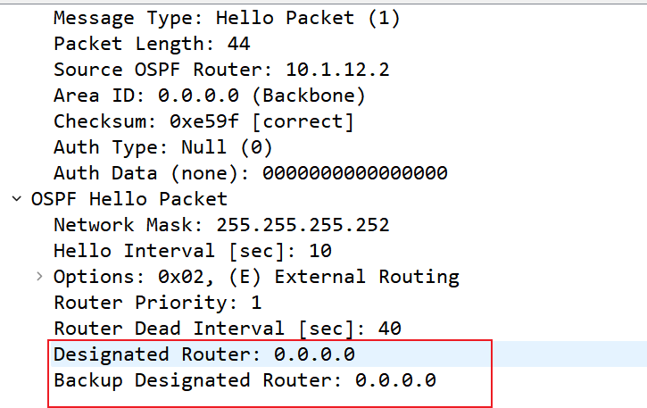
Neighbor：邻居地址，没有邻居时该字段为空
OSPF报文交互过程
在广播网络中OSPF交互过程：

可知DR/BDR通过Hello报文选举并维护
在点到点/点到多点网络中建立OSPF邻接关系
在点到点/点到多点网络中，邻接关系的建立过程和广播网络一样，唯一不同的是不需要选举DR和BDR，DD报文是组播发送的。
NBMA网络略
具体参考华为产品文档
LSA与LSDB
LSA(链路状态通告)，描述了路由器的链路状态信息（路由条目、开销、优先级、邻居信息）等
设备上用于保存LSA的数据库，称为LSDB（链路状态数据库）
OSPF协议中一共有7种LSA，在HCIP阶段只学习6种，分别是：
| LSA类型 | LSA作用 |
|---|---|
| Router-LSA（Type1） | 每个设备都会产生，描述了设备的链路状态和开销，在所属的区域内传播。 |
| Network-LSA（Type2） | 由DR（Designated Router）产生，描述本网段的链路状态，在所属的区域内传播。 |
| Network-summary-LSA（Type3） | 由ABR产生，描述区域内某个网段的路由，并通告给发布或接收此LSA的非Totally STUB或NSSA区域。 |
| ASBR-summary-LSA（Type4） | 由ABR产生，描述到ASBR的路由，通告给除ASBR所在区域的其他相关区域。 |
| AS-external-LSA（Type5） | 由ASBR产生，描述到AS外部的路由，通告到所有的区域（除了STUB区域和NSSA区域）。 |
| NSSA LSA（Type7） | 由ASBR产生，描述到AS外部的路由，仅在NSSA区域内传播。 |
LSA不只是传递路由，同时也传递拓扑
- 广播网络：只有二类LSA发布拓扑信息
- 点对点网络：一类和二类LSA发布拓扑信息
如果将路由比作公交站牌子上的站名，那么拓扑就是地图
只看站名，没有地图，找不到去目的地的路
所以拓扑和路由在路由转发的过程中缺一不可
在广播网络中，二类LSA由DR发送，一类LSA所有设备均可发送。
由于DR设备有BDR/DRother的全部拓扑信息，所以广播网络中一类LSA无需发送拓扑信息，只需二类LSA发送拓扑信息就可以让区域内任意设备得到全部的网络拓扑
三类LSA用于跨区域发布路由信息，不发布拓扑信息
五类LSA用于发布外部网络（其他路由协议）的路由信息
四类LSA用于告诉OSPF网络“外部”路由是由谁通告的
将LSDB中的LSA通过SPF算法计算，就可以生成OSPF路由表，然后由设备择优写入主路由表
SPF计算
通过SPF算法，可以让同区域内任意设备，得到一颗以自己为起点。无环，可以到达区域内其他所有设备并且路径最优的树
OSPF多区域
由于同一区域内的所有设备都维护这一个相同的LSDB，当OSPF网络中存在大量设备时，过大的LSDB会给予设备很大的负担
为了减少LSDB的规模，OSPF网络支持区域划分
不同区域之间只传递三类及以上的LSA，而不传递一、二类LSA，这样避免了不同区域学到对方的拓扑信息，同时减少了LSDB规模
由于SPF只能计算并生成同一区域内的最短路径树，无法跨区域计算（没有拓扑信息）
所以三类及以上LSA在不同区域之间传递时有环路的可能
为了避免环路，OSPF有下述规定
- 区域0为骨干区域，其他区域都是非骨干区域
- 非骨干区域只能将三类及以上LSA传递给骨干区域，并不会继续传递从骨干区域接收的LSA给其他区域
- 骨干区域可以将三类及以上LSA传递给其他任意区域
- LSA传递方向不可逆（比如区域0和2相连，区域2不能将从区域0收到的LSA传回区域0）
这就表示，非骨干区域必须和骨干区域之间相连，否则无法学习到其他区域的路由信息
同时，也断绝了多区域间环路发生的可能
由于骨干区域是多区域
OSPF网络的核心并且对设备性能有很大的要求所以一般在核心层设备运行骨干区域，接入和汇聚部署在非骨干区域并进行合理的区域划分